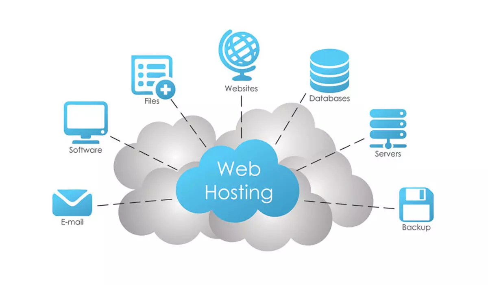
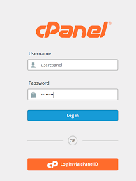

Nama: muhamad daffa
Alamat: Jl. Srengseng Sawah, Jakarta selatan
Hobi: mendengarkan musik
Cita-cita Orang Yang Berguna Dimasa Depan ,dan ingin membahagiakan orang tua
Penjelasan Hosting Hosting adalah layanan yang menyediakan ruang penyimpanan di sebuah komputer khusus yang disebut server untuk menyimpan semua file, data, dan konten sebuah website. Dengan adanya hosting, website bisa online dan dapat diakses oleh siapa saja melalui internet. Kenapa Website Butuh Hosting? Website bukan hanya sebuah halaman kosong di internet, tapi terdiri dari berbagai file seperti gambar, teks, video, dan kode pemrograman. Semua ini harus disimpan di suatu tempat yang terhubung dengan internet secara terus menerus. Tempat penyimpanan inilah yang disebut hosting.
Plesk:
Cocok untuk: Pengguna dengan sistem operasi Linux dan Windows.
Keunggulan: Dukungan multi-platform yang luas dan desain yang bersih, cocok untuk berbagai jenis proyek web.
DirectAdmin:
Cocok untuk: Pengguna yang mencari solusi hemat biaya dan ringan.
Keunggulan: Ringan dan efisien, konsumsi sumber daya rendah, serta tetap menyediakan fitur dasar pengelolaan.
Webmin:
Cocok untuk: Pengguna Linux dengan tingkat pengetahuan teknis lebih tinggi.
Keunggulan: Open source, antarmuka yang lebih teknis, dan fleksibilitas tinggi untuk kustomisasi.
ISPConfig:
Cocok untuk: Pengguna Linux yang ingin mengelola banyak server sekaligus.
Keunggulan: Control panel open source yang gratis dan efisien untuk manajemen multi-server.
layanan hosting untuk memudahkan pengguna dalam mengelola berbagai aspek dari layanan hosting mereka, seperti: Mengelola file website,Mengatur domain dan subdomain,Membuat dan mengatur akun email,Mengelola database,Memasang CMS (seperti WordPress),Melihat penggunaan resource (bandwidth, storage, dll.),Mengatur keamanan seperti SSL dan backup,Dengan control panel, pengguna tidak perlu menggunakan perintah command line atau keahlian teknis tingkat lanjut untuk mengelola server atau website.
Contoh panel hosting
cPanel: Salah satu panel yang paling umum digunakan.
Plesk: Pilihan populer lainnya.
DirectAdmin: Panel hosting berbayar.
VestaCP: Panel hosting gratis.
